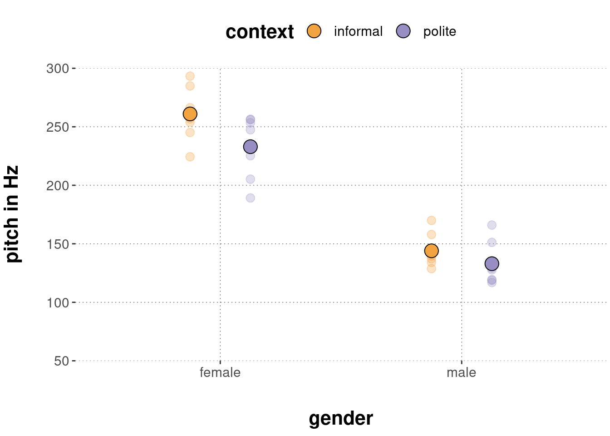
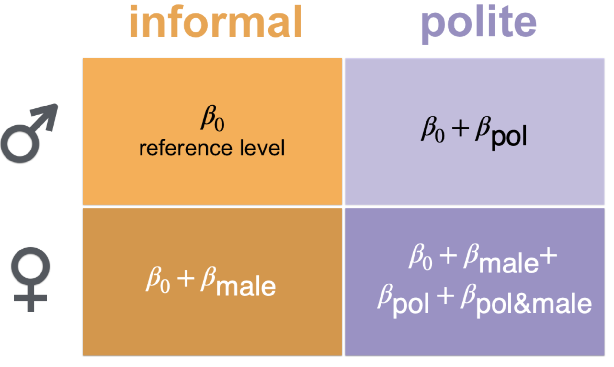
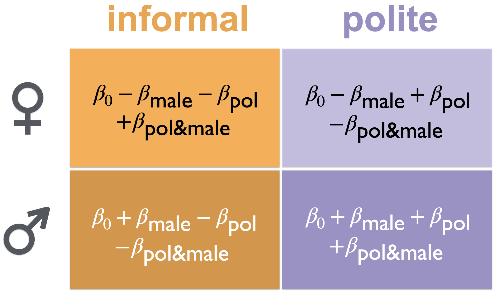

The mean estimate for male speakers speaking in informal contexts is given by \(\beta_0 +\beta_{\text{male}} = 261.02993 -116.53009 \approx 144\).
14.3 Multiple predictors
Factorial designs, which have more than one categorical predictor variable, are common in experimental psychology. Any contrast coding scheme usable for encoding a single categorical predictor can, in principle, also be used when there are multiple categorical predictors. But having multiple categorical predictors also requires some additional considerations relating to how (the model assumes that) different predictors might or might not interact with one another.
Here is an informal example.
Suppose that we have metric measurements of how tasty a snack is perceived to be.
There are two categorical factors that we want to use to predict the average tastiness of a snack.
The first predictor is mayo and we encode it numerically as: 0 if the dish does not contain mayonnaise and 1 if it does.
The second predictor is chocolate and we encode it similarly as: 0 if the dish does not contain chocolate and 1 if it does.
Suppose we estimate these two slope coefficients (one for mayo and one for chocolate) for our imaginary data set and find that both are credibly positive.
That means that there is reason to believe that, all else equal, when we find mayo in a snack we may expect it to be rated as more tasty, and, all else equal, when we find chocolate in a snack we may also expect it to be rated as more tasty.64
But what about a dish with both mayo and chocolate?
Maybe we can agree to assume for the sake of argument that, on average, snacks containing both mayo and chocolate are not rated as tasty at all.
Or, at least, we might want to include in our model the possibility that the combination of mayo and chocolate has a different effect than the sum of the contributions of (i) mayo on its own and that of (ii) chocolate of its own.
That is why, when we have multiple categorical predictors, we also often want to include yet another type of slope coefficient, so-called interaction terms, that capture how the combination of different factor levels from different categorical predictors, well, interact.
If you like a more precise characterization at this moment already (although an example below will make things hopefully much clearer), we could say that, in the context of a linear regression model, an interaction between levels of several predictors is a (potential) deviation from the sum of all of the additive effects of the individual predictor levels in isolation.
To make this more precise, let us consider the example of the politeness data.65
The to-be-predicted data are measurements of voice pitch in a \(2 \times 2\) factorial design, with factors gender and context.
The factor gender has (sadly only) two levels: “male” and “female”.
The factor context has two levels, namely “informal” for informal speech situations and “polite” for polite speech situations.
Let us first load the data & inspect it.
politeness_data <- aida::data_polite
politeness_data %>% head(5)## # A tibble: 5 × 5
## subject gender sentence context pitch
## <chr> <chr> <chr> <chr> <dbl>
## 1 F1 F S1 pol 213.
## 2 F1 F S1 inf 204.
## 3 F1 F S2 pol 285.
## 4 F1 F S2 inf 260.
## 5 F1 F S3 pol 204.The research hypotheses of interest are:
- H1: (gender): the voice pitch of male speakers is lower than that of female speakers;
- H2: (context): the voice pitch of speech in polite contexts is lower than in informal contexts; and
- H3: (interaction): the effect of context (= the difference of voice pitch between polite and informal context; as mentioned in the second hypothesis) is larger for female speakers than for male speakers.
The first two hypotheses are statements related to what is often called main effects, namely differences between levels of a single categorical predictor, averaging over all levels of any other categorical predictor. Consequently, we could also rephrase this as saying: “We expect a main effect of gender (H1) and a main effect of context (H2).” only thereby omitting the direction of the difference between respective factor levels. The third hypothesis is a more convoluted formulation about the interaction of the two categorical predictors.
To understand hypotheses about main effects and interactions better, at least in the easiest case of a \(2 \times 2\) factorial design, it is useful to consider stylized diagrams, like in Figure 14.1, which show how the data would look like if main effects or various interaction relations are present or absent. Concretely, the panels in Figure 14.1 depict the following types of situations:
- A: no main effect (neither gender nor context) and no interaction;
- B: main effect of gender, no main effect of context and no interaction;
- C: main effect of context, no main effect of gender and no interaction;
- D: main effects of both context and gender but no interaction;
- E: main effects of both context and gender with an interaction amplifying the strength of the main effect of context for the female category; and
- F: as in E but with a different kind of interaction (effect reversal).
Notice that the type of situation shown in panel E is the expectation derivable from the conjunction of the hypotheses H1-H3 formulated above: we predict/expect main effects for both predictors (in the direction shown in panel E) and we expect the effect of context to be stronger for female speakers than for male speakers.
![Schematic representation of the presence/absence of main effects and (different kinds of) interactions. The situations shown are as follows: A: no main effect (neither gender nor context) and no interaction; B: main effect of gender only w/ no interaction; C: main effect of context only w/ no interaction; D: main effects of both context and gender but no interaction; E: main effects of both context and gender with an interaction amplifying the strength of the main effect of context for the female category (this is the situation envisaged by hypotheses 1-3 from the main text); F: as in E but with a different kind of interaction (effect reversal).](I2DA_files/figure-html/04-03-2x2-hypotheses-1.png)
Figure 14.1: Schematic representation of the presence/absence of main effects and (different kinds of) interactions. The situations shown are as follows: A: no main effect (neither gender nor context) and no interaction; B: main effect of gender only w/ no interaction; C: main effect of context only w/ no interaction; D: main effects of both context and gender but no interaction; E: main effects of both context and gender with an interaction amplifying the strength of the main effect of context for the female category (this is the situation envisaged by hypotheses 1-3 from the main text); F: as in E but with a different kind of interaction (effect reversal).
Let us now take a look at the actual data:

Judging from visual inspection, we might say that the empirical data most resembles panel D in Figure 14.1. It looks as if there might be a rather strong effect of gender. The measurements in the female category seem (on average) higher than in the male category. Also, there might well be a main effect of context. Probably the voice pitch in informal contexts is higher than in polite contexts, but we cannot be as sure as for a potential main effect of gender. It is very difficult to discern whether the data supports the hypothesized interaction.
In the following, we are therefore going to test these hypotheses (more or less directly) with two different kinds of coding schemes: treatment coding and sum coding.
14.3.1 Treatment coding
In a \(2 \times 2\) factorial design there are essentially four pairs of factor levels (so-called design cells). For the politeness data, these are female speakers in informal contexts, female speakers in polite contexts, male speakers in informal contexts and male speakers in polite contexts. Different coding schemes exist by means of which different comparisons of means of design cells (or single factors) can be probed. A simple coding scheme for differences in our \(2 \times 2\) design is shown in Figure 14.2. This is a straightforward extension of treatment coding for the single predictors introduced previously which additionally includes a potential interaction.

Figure 14.2: Regression coefficients for a factorial design (using so-called ‘treatment coding’).
The coding scheme in Figure 14.2 considers the cell “female+informal” as the reference level and therefore models its mean as intercept \(\beta_0\). We then have a slope term \(\beta_{\text{pol}}\) which encodes the difference between female pitch in informal and female pitch in polite contexts. Analogous reasoning holds for \(\beta_{\text{male}}\). Finally, we also include a so-called interaction term, denoted as \(\beta_{\text{pol&male}}\) in Figure 14.2. The interaction term quantifies how much a change away from the reference level in both variables differs from the sum of unilateral changes.
Another way of describing what the interaction term \(\beta_{\text{pol&male}}\) captures is that it represents the difference which the manipulation of context has on female and male speakers. To see this, notice that the “extent of the effect of context”, i.e., the decrease in pitch between informal and polite contexts, for female speakers is:
\[ \text{eff_context_on_female} = \beta_0 - (\beta_0 + \beta_\text{pol}) = - \beta_\text{pol} \] The bigger this number, the larger, so to speak, “the effect of context on female speakers”.
The effect of context on male speaker’s pitch is correspondingly:
\[ \text{eff_context_on_male} = (\beta_0 + \beta_\text{male} + \beta_{\text{pol}} + \beta_\text{pol&male}) - (\beta_\text{pol} + \beta_\text{male}) = - \beta_{\text{pol}} - \beta_\text{pol&male} \]
Therefore, the difference -comparing female and male speakers- of the effect of context is: \[\text{eff_context_on_female} - \text{eff_context_on_male} = \beta_\text{pol&male}\]
How do these model coefficients help address the research hypotheses we formulated above? - The interaction term \(\beta_\text{pol&male}\) directly relates to hypothesis 3 above, namely that the context-effect is larger for female speakers than for male speakers. In other words, we can express H3 as the parameter-based hypothesis that:
\[\textbf{H3: (interaction)} \ \ \ \ \beta_\text{pol&male} > 0\] The other two hypotheses are not directly expressible as a statement involving a single coefficient. But they can be expressed as a complex hypothesis involving more than one coefficient of the model. Hypothesis H1 states that the pitch of male speakers (averaging over context types) is lower than that of female speakers (averaging over context types). This translates directly into the following statement (where the LHS/RHS is the average pitch of male/female speakers):
\[ \frac{1}{2} (\beta_0 + \beta_\text{male} + \beta_0 + \beta_\text{male} + \beta_\text{pol} + \beta_\text{pol&male}) < \frac{1}{2} (\beta_0 + \beta_0 + \beta_\text{pol}) \] This can be simplified to:
\[ \textbf{H1: (gender)} \ \ \ \ \beta_\text{male} + \frac{1}{2} \beta_\text{pol&male} < 0 \]
Similar reasoning leads to the following formulation of hypothesis H2 concerning a main effect of factor context:
\[ \textbf{H2: (context)} \ \ \ \ \beta_\text{pol} + \frac{1}{2} \beta_\text{pol&male} < 0 \]
To test these hypotheses, we can fit a regression model with this coding scheme using the formula pitch ~ gender * context.
Importantly the star * between explanatory variables gender and context indicates that we also want to include the interaction term.66
fit_brms_politeness <- brm(
# model 'pitch' as a function of 'gender' and 'context',
# also including the interaction between `gender` and `context`
formula = pitch ~ gender * context,
data = politeness_data
)The summary statistics below lists Bayesian summary statistics for the (marginal) posteriors of the model parameters indicated in Figure 14.2.
summary(fit_brms_politeness)$fixed[,c("l-95% CI", "Estimate", "u-95% CI")]## l-95% CI Estimate u-95% CI
## Intercept 245.65872 261.02993 276.800178
## genderM -138.41661 -116.53009 -93.764509
## contextpol -49.44973 -27.69013 -4.936747
## genderM:contextpol -15.79220 16.16356 46.823184The function brms::hypothesis can test the relevant hypotheses based on the brms_fit object stored in fit_brms_politeness.
Starting with H1, we find very strong support for a main effect of gender:
brms::hypothesis(fit_brms_politeness, "genderM + 0.5 * genderM:contextpol < 0")## Hypothesis Tests for class b:
## Hypothesis Estimate Est.Error CI.Lower CI.Upper Evid.Ratio
## 1 (genderM+0.5*gend... < 0 -108.45 8.13 -121.85 -94.97 Inf
## Post.Prob Star
## 1 1 *
## ---
## 'CI': 90%-CI for one-sided and 95%-CI for two-sided hypotheses.
## '*': For one-sided hypotheses, the posterior probability exceeds 95%;
## for two-sided hypotheses, the value tested against lies outside the 95%-CI.
## Posterior probabilities of point hypotheses assume equal prior probabilities.As for H2, we also find very strong evidence in support of a belief in a main effect of context:
brms::hypothesis(fit_brms_politeness, "contextpol + 0.5 * genderM:contextpol < 0")## Hypothesis Tests for class b:
## Hypothesis Estimate Est.Error CI.Lower CI.Upper Evid.Ratio
## 1 (contextpol+0.5*g... < 0 -19.61 8.13 -33.14 -6.24 128.03
## Post.Prob Star
## 1 0.99 *
## ---
## 'CI': 90%-CI for one-sided and 95%-CI for two-sided hypotheses.
## '*': For one-sided hypotheses, the posterior probability exceeds 95%;
## for two-sided hypotheses, the value tested against lies outside the 95%-CI.
## Posterior probabilities of point hypotheses assume equal prior probabilities.In contrast, based on the data and the model, there is at best very mildly suggestive evidence in favor of the third hypothesis according to which female speakers are more susceptible to pitch differences induced by different context types.
brms::hypothesis(fit_brms_politeness, "genderM:contextpol > 0")## Hypothesis Tests for class b:
## Hypothesis Estimate Est.Error CI.Lower CI.Upper Evid.Ratio
## 1 (genderM:contextpol) > 0 16.16 15.94 -9.44 41.91 5.71
## Post.Prob Star
## 1 0.85
## ---
## 'CI': 90%-CI for one-sided and 95%-CI for two-sided hypotheses.
## '*': For one-sided hypotheses, the posterior probability exceeds 95%;
## for two-sided hypotheses, the value tested against lies outside the 95%-CI.
## Posterior probabilities of point hypotheses assume equal prior probabilities.We can interpret this as saying that, given model and data, it is plausible to think that male speakers had lower voice pitch than female speakers (averaging over both context types).
We may also conclude that given model and data, it is plausible to think that voice pitch was lower in polite contexts than informal contexts (averaged over both levels of factor gender).
The posterior of the interaction term genderM:contextpol does not give any indication to think that 0, or any value near it, is not plausible.
This can be interpreted as saying that there is no indication, given model and data, to believe that male speakers’ voice pitch changes differently from informal to polite contexts than female speakers’ voice pitch does.
Exercise 14.3
Based on the estimate given above, what is the mean estimate for male speakers speaking in informal contexts?
14.3.2 Sum coding
Treatment coding allowed us to directly test H3 in terms of a single coefficient, but testing of hypotheses about so-called “main effects” (H1 and H2) cannot be directly read off a single coefficient’s posterior. As hypotheses about main effects are natural and common in experimental psychology, another coding scheme is very popular, namely sum coding.67
Figure 14.3 shows how the mean of each design cell in our \(2\times2\) design is expressed in terms of four regression coefficients. Parameter \(\beta_0\) is called “intercept” as usual, but encodes the so-called grand mean, i.e. the mean value of all data observations. To see this, just sum all of the four terms in Figure 14.3 and divide by 4: the result is \(\beta_0\). The parameters \(\beta_\text{male}\) and \(\beta_\text{pol}\) are slope coefficients, but they now encode the deviance from the grand mean. For example, \(\beta_\text{male}\) encodes the difference between (i) the average pitch of all measurements taken from male participants and (ii) the grand mean. Finally, the interaction coefficient \(\beta_\text{pol&male}\) serves the same function as before in treatment coding, namely to make room for a difference in the strength of one main effect, e.g., of context, on the levels of the other predictor, e.g., gender.

Figure 14.3: Regression coefficients for a factorial design (using so-called ‘sum coding’).
It is then clear that under treatment coding, the hypotheses H1 and H2, which target main effects, can be straightforwardly stated as inequalities concerning singular coefficients, namely:
\[ \textbf{H1: (gender)} \ \ \ \ \beta_\text{male} < 0 \]
\[ \textbf{H2: (context)} \ \ \ \ \beta_\text{pol} < 0 \]
What is less obvious is that the interaction term, as defined under sum coding, still directly expresses the interaction hypothesis H3. To see this, calculate as before:
\[ \begin{align*} & \text{eff_context_on_female} \\ & = (\beta_0 - \beta_\text{male} - \beta_\text{pol} + \beta_\text{pol&male}) - (\beta_0 - \beta_\text{male} + \beta_\text{pol} - \beta_\text{pol&male}) \\ & = - 2 \beta_\text{pol} + 2 \beta_\text{pol&male} \end{align*} \]
The effect of context on male speaker’s pitch is:
\[ \begin{align*} & \text{eff_context_on_male} \\ & = (\beta_0 + \beta_\text{male} - \beta_\text{pol} - \beta_\text{pol&male}) - (\beta_0 + \beta_\text{male} + \beta_\text{pol} + \beta_\text{pol&male}) \\ & = - 2 \beta_\text{pol} - 2 \beta_\text{pol&male} \end{align*} \]
Consequently, the difference -comparing female and male speakers- of the effect of context under sum coding is expressed as:
\[\text{eff_context_on_female} - \text{eff_context_on_male} = 4 \beta_\text{pol&male}\]
To implement sum coding for use in brms, R provides the functions contrasts and contr.sum.
Here is an example.
# make predictors 'factors' b/c that's required for contrast coding
# also: change order to match coding assumed in the main text
data_polite <- aida::data_polite %>%
mutate(
gender = factor(gender, levels = c('M', 'F')),
context = factor(context, levels = c('pol', 'inf'))
)
# apply 'sum' contrasts
contrasts(data_polite$context) <- contr.sum(2)
contrasts(data_polite$gender) <- contr.sum(2)
# add intelligible name to the new contrast coding
colnames(contrasts(data_polite$context)) <- ":polite"
colnames(contrasts(data_polite$gender)) <- ":male"
# run brms as usual
fit_brms_politeness_sum <- brm(
pitch ~ gender * context,
data_polite
)We can inspect the coefficients as usual:
summary(fit_brms_politeness_sum)$fixed[, c("l-95% CI", "Estimate" ,"u-95% CI")]## l-95% CI Estimate u-95% CI
## Intercept 185.03089 192.940318 200.880282
## gender:male -61.64790 -54.152334 -46.524113
## context:polite -17.67545 -9.675001 -1.739423
## gender:male:context:polite -3.85321 4.012769 11.926132The summary statistics for the posterior already directly address all three hypotheses in question, but we should compare our previous results to the full results of using brms::hypothesis also for the sum-coded analysis.
# testing H1
brms::hypothesis(fit_brms_politeness_sum, "gender:male < 0")## Hypothesis Tests for class b:
## Hypothesis Estimate Est.Error CI.Lower CI.Upper Evid.Ratio Post.Prob
## 1 (gender:male) < 0 -54.15 3.86 -60.51 -47.78 Inf 1
## Star
## 1 *
## ---
## 'CI': 90%-CI for one-sided and 95%-CI for two-sided hypotheses.
## '*': For one-sided hypotheses, the posterior probability exceeds 95%;
## for two-sided hypotheses, the value tested against lies outside the 95%-CI.
## Posterior probabilities of point hypotheses assume equal prior probabilities.# testing H2
brms::hypothesis(fit_brms_politeness_sum, "context:polite < 0")## Hypothesis Tests for class b:
## Hypothesis Estimate Est.Error CI.Lower CI.Upper Evid.Ratio
## 1 (context:polite) < 0 -9.68 4.05 -16.45 -3.03 116.65
## Post.Prob Star
## 1 0.99 *
## ---
## 'CI': 90%-CI for one-sided and 95%-CI for two-sided hypotheses.
## '*': For one-sided hypotheses, the posterior probability exceeds 95%;
## for two-sided hypotheses, the value tested against lies outside the 95%-CI.
## Posterior probabilities of point hypotheses assume equal prior probabilities.# testing H3
brms::hypothesis(fit_brms_politeness_sum, "gender:male:context:polite > 0")## Hypothesis Tests for class b:
## Hypothesis Estimate Est.Error CI.Lower CI.Upper Evid.Ratio
## 1 (gender:male:cont... > 0 4.01 4.02 -2.57 10.5 5
## Post.Prob Star
## 1 0.83
## ---
## 'CI': 90%-CI for one-sided and 95%-CI for two-sided hypotheses.
## '*': For one-sided hypotheses, the posterior probability exceeds 95%;
## for two-sided hypotheses, the value tested against lies outside the 95%-CI.
## Posterior probabilities of point hypotheses assume equal prior probabilities.Since we didn’t use any priors, which could have altered results slightly between treatment- and sum-coded regression modeling, we find (modulo sampling imprecision) the same “evidence ratios” and posterior probabilities of these hypotheses. The overall conclusions are therefore the exact same: evidence for both main effects; no evidence for interaction.
References
Franke, Michael, and Timo B. Roettger. 2019. “Bayesian Regression Modeling (for Factorial Designs): A Tutorial.”
Jaeger, T. Florian. 2008. “Categorical Data Analysis: Away from ANOVAs (Transformation or Not) and Towards Logit Mixed Models.” Journal of Memory and Language 59: 434–46.
Notice the deliberate avoidance of causal terminology. We should not say that there is reason to believe that adding
mayoto any dish will make it taste better, just that, epistemically put, observing it in a dish should alter our expectations.↩︎Part of the following content is a distilled version of a short tutorial on Bayesian regression modeling for factorial designs (Franke and Roettger 2019), which can be downloaded here.↩︎
If the interaction term should be excluded, the formula
pitch ~ gender + contextcan be used, so with+instead of*.↩︎The comparisons tested by sum coding are the same contrasts also addressed by analysis of variance (ANOVA), a special case of regression modeling which was very popular and is still the standard method of statistical analysis for factorial designs in some areas of experimental psychology, despite good arguments in favor of (hierarchical) generalized regression analyses (Jaeger 2008).↩︎